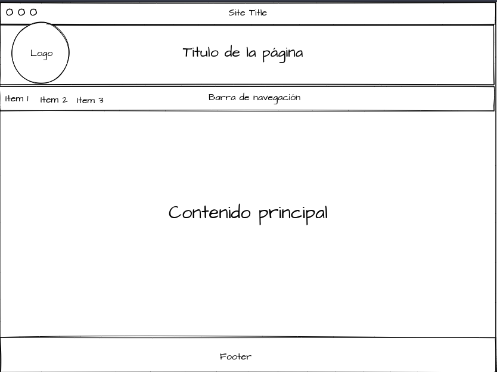
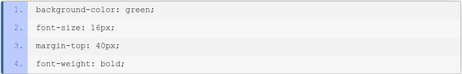
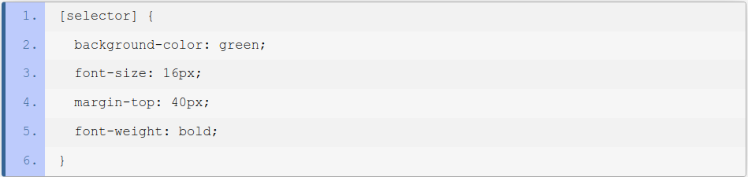

Proposito del sitio
El proposito de este sitio WEB es el de presentar un borrador de la popuesta de la empresa HtmlDesign para la universidad del estado que busca guiar a los futuros desarrolladores WEBs en su proceso de aprendizaje, para ello se abordan temas sumamente relevantes
como lo son las hojas de estilos en cascadas por sus siglas CSS y distintos frameworks que facilitan el uso de estas.
Mockup

Hojas de estilo en cascada
CSS
CSS es un estándar diseñado principalmente para separar los atributos presentacionales (como el color de fondo, el tamaño de la fuente o la sangría) del contenido. Aunque éste puede trabajar con muchos tipos de documentos, es mayormente utilizado como una forma de proveer información presentacional en páginas web.
DECLARACIONES, PROPIEDADES Y VALORES
La declaración es la unidad básica de CSS, lo que significa que no puedes usar nada más pequeño que esto en tus documentos. Una declaración consiste, básicamente, en la asignación de un valor a una propiedad.
En otras palabras, una declaración es la respuesta a una pregunta. ¿Qué tan ancho debería ser esta tabla? ¿Cuán grueso este borde? ¿De qué color debería ser este fondo? ¿Qué tan grande la fuente en este párrafo? Y es exactamente así cómo defines el aspecto de tu documento: estableciendo declaraciones, una para cada propiedad que necesitas definir.

SELECTORES
Con lo visto hasta el momento podemos construir declaraciones, pero ¿cómo indicamos qué elementos en el documento deben ser afectados por éstas? Aquí es donde los selectores CSS entran en la escena. Un selector es el medio para hacer una referencia a un grupo de uno o más elementos HTML, con el fin de aplicar a éste un conjunto de declaraciones CSS.
Existe una estructura con la que debes cumplir para usar un selector y está compuesta por el selector seguido del conjunto de declaraciones encerradas por llaves ("{}"). El siguiente ejemplo, en el cual espacios y quiebres de línea han sido agregados para mejorar la legibilidad, refleja esta estructura.

Frameworks CSS
¿Qué son?
Un framework de CSS es una biblioteca de estilos genéricos que puede ser usada para implementar diseños web. Aportan una serie de utilidades que pueden ser aprovechadas frecuentemente en los distintos diseños web.
Ventajas que aporta un framework CSS
Las principales ventajas que nos aporta son las siguientes:
-
Acelera el desarrollo de las páginas web, ya que conociendo un poco el framework CSS, se pueden desarrollar las páginas de una manera más rápida que si lo hacemos desde cero.
-
Facilita el trabajo en equipo, ya que si hemos desarrollado una página y sus estilos usando un framework, si posteriormente otra persona necesita modificarlos y conoce ese framework, puede mantener la misma línea de desarrollo de las hojas de estilo y esa página web.
-
Garantiza que todo lo que se desarrolle sea compatible con todos los navegadores, lo que si tuviéramos que hacer nosotros mismos supondría más tiempo y esfuerzo.
-
Los frameworks son mantenidos y evolucionados por la comunidad, por lo que los posibles errores son corregidos y sus funciones van ampliándose
Referencias bibliograficas
-
Colaboradores de Wikipedia. (2020, 3 mayo). Framework de CSS. Wikipedia, la enciclopedia libre. https://es.wikipedia.org/wiki/Framework_de_CSS
-
de León, D. P. (2022). Hojas de estilo en cascada (CSS). htmlquick. https://www.htmlquick.com/es/tutorials/css.html
-
Jiménez, J. D. P. (2020, 20 abril). Ventajas y desventajas de usar Framework CSS. OpenWebinars.net. https://openwebinars.net/blog/ventajas-y-desventajas-de-usar-framework-css/